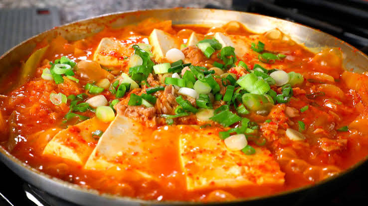

Description
Today’s recipe is from my first cookbook, and something that I make for my family all the time. It’s bubbling, hot kimchi stew with tuna
(called chamchi-kimchi-jjigae in Korean, 참치김치찌개), so easy to make, satisfying, and delicious. It’s made with just a few ingredients,
the most important ones are well-fermented, sour kimchi (the older, the better), and a can or 2 cans of tuna. We never make this with fresh tuna
, we make it with canned tuna. You can use any tuna but I prefer Korean tuna in oil because the meat is firmer and it’s well-packed. If you
don’t have or don’t like tuna, you can use my regular kimchi-jjigae recipe.
Ingredients
- 1 or 2 cans of tuna
- 1 pound fermented kimchi, cut into 2 inch long pieces
- ¼ cup kimchi brine, optional
- 1 medium onion (about 1 cup), sliced
- 2 green onion, one cut diagonally into pieces and one chopped up into small pieces
- 1 teaspoon salt
- 2 teaspoons Korean hot pepper flakes
- 2 teaspoons Turbinado sugar (or white or brown sugar)
- 2 teaspoons toasted sesame oil
- 8 ounces tofu (about 1 cup), sliced into bite size pieces
Steps
- Place the kimchi in a shallow, heavy pot or pan
- Add kimchi brine, onion, green onion, kosher salt, hot pepper flakes, sugar, and toasted sesame oil.
- Add 2½ cups water and cover
- Cook for 25 minutes over medium high heat. If it boils over, crack the lid a little and if the water boils out,
add more so that the kimchi and all the ingredients are always submerged.
- Stir the stew with a wooden spoon and add tuna and tofu
- Continue to cook for another 5 minutes until the tofu turns soft.
- Sprinkle with the chopped green onion and serve right away with rice and more side dishes if you desire.